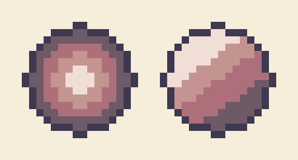
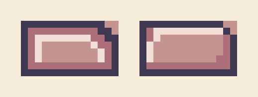
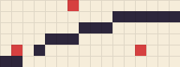

GameDev 2D · P1
GameDev 2D · P1

Crítica em tamanho real
Objetivo: avaliar a arte da turma como o jogador vai vê-la.
- Cada aluno abre o seu
teste_escala.pngem tela cheia, ampliado em escala inteira (o mesmo zoom para todos). - A turma circula. Em cada máquina, deixa um post-it com uma coisa que lê bem e uma pergunta (“o que é isso na mão dele?”).
- O instrutor projeta três heróis por vez, em preto (teste de silhueta), e a turma tenta dizer quem é quem.
| Olhe para | Pergunta |
|---|---|
| Silhueta | Em preto, ainda se reconhece o herói e a direção em que ele olha? |
| Contraste | O herói se destaca do fundo? O inimigo se destaca do herói? |
| Escala | Herói, inimigo e tiles parecem do mesmo mundo, ao lado do rei? |
| Paleta | Alguma peça parece “colada” de outro jogo? |
Os erros mais comuns (e como corrigir)
Objetivo: reconhecer na sua arte os erros que o Bloco 2 do EAD descreveu.
Pillow shading

Como corrigir: escolha de onde vem a luz (no castelo, de cima) e redesenhe a sombra só do lado oposto.
Banding

Como corrigir: quebre o paralelismo: varie a largura das faixas e interrompa-as onde a forma vira.
Pixel órfão

Como corrigir: cada pixel precisa encostar numa forma ou ter uma razão (um brilho no olho, um rebite). Se não tem, apague.
Com os post-its e esta lista, corrija o elenco, os itens e as peças — e finalize o que ficou faltando da tabela da P1.2. O instrutor passa nas máquinas para a correção individual.
A sua arte dentro do castelo, no Godot
Objetivo: ver as suas peças na fase do jogo modelo, na escala do jogo — critério crítico do marco.
- Descompacte o projeto O Rei e os Porcos (anexo da aula no Classroom).
- No Godot 4, Importar → escolha o
project.godot→ Importar e Editar. - No painel Sistema de Arquivos, crie a pasta
arte_alunoe arraste para ela os seus PNGs.
- Abra
cenas/fases/fase_1.tscn. - Arraste o PNG do herói do Sistema de Arquivos para a viewport: o Godot cria um Sprite2D.
- Posicione-o de pé no chão, perto do rei. Faça o mesmo com o inimigo e com alguns tiles.
- Para alinhar tiles à grade: ligue o ímã de grade na barra da viewport, configure o passo para 32 px e, no Inspetor do Sprite2D, desmarque Centered.
- Rode só esta cena com F6: as suas peças aparecem paradas, no tamanho em que o jogador vai vê-las.
O projeto do castelo já usa filtro Nearest (Configurações do Projeto → Renderização → Texturas). Para ver a diferença: selecione o seu Sprite2D, vá em CanvasItem → Texture → Filter e escolha Linear. O pixel borra. Volte para Inherit.
A prancha de portfólio
Objetivo: apresentar a arte como um artista apresenta — critério desejável.
- No Photoshop, documento 1920 × 1080 px, fundo neutro escuro ou claro. Em casa, o GIMP ou o Photopea (no navegador) são gratuitos e fazem o mesmo; no GIMP, ao ampliar, use Imagem → Redimensionar imagem com interpolação Nenhuma.
- Para ampliar cada sprite: Imagem → Tamanho da imagem, 400% ou 800%, reamostragem Vizinho mais próximo (preservar bordas). Nunca “Automático” ou “Bicúbico”.
- Monte: herói grande à esquerda, inimigo, as seis peças, a paleta em quadradinhos e o print do teste no Godot.
- Título do jogo e o seu nome. Exporte em PNG.
Quiz de revisão
Objetivo: conferir os conceitos do EAD. Responda cada pergunta; a explicação aparece em seguida.
1. Por que a pixel art deve ser ampliada só em múltiplos inteiros (2×, 3×, 4×)?
Em escala inteira cada pixel vira um quadrado igual. Em 2,5×, alguns pixels viram 2 e outros 3, e o desenho fica irregular.2. Numa rampa de cor com hue shifting, o que acontece com a sombra?
No hue shifting a sombra gira o matiz (no porco do castelo, do verde para o azul) além de escurecer. Isso mantém a cor viva.3. O que caracteriza o pillow shading?
No pillow shading a sombra acompanha a borda em anéis, como numa almofada. A correção é escolher uma direção de luz.4. Qual teste confere se um personagem lê bem dentro do jogo?
O teste de silhueta: se o personagem pintado de uma cor só ainda é reconhecível, ele vai ler bem pequeno e em movimento.5. Numa linha de pixel art, o que provoca os jaggies?
Jaggies são quebras no padrão dos degraus (3-1-3-1-2). Degraus iguais fazem a reta parecer lisa.6. Qual exportação a trilha pede para os sprites que vão para o jogo?
PNG guarda a transparência sem perder cores; 1× porque quem amplia é a engine; nome padrão para o projeto achar cada arquivo.
Entregas e encerramento
Objetivo: conferir tudo o que fecha a UC P1.
| Entrega | Onde | Situação |
|---|---|---|
| Atividade P1.1 — cópia de estudo (tile e rei) | Classroom | Feita na aula inicial |
| Atividade P1.2 — toda a arte base do jogo (elenco, itens, cenário), paleta e teste de escala | Classroom | Marco da UC — reenvie com as correções de hoje |
| Print das peças na fase 1 do Godot | Classroom, na P1.2 | Feito hoje (Sala 03) |
| Prancha de portfólio | Classroom, na P1.2 | Desejável |
- Toda a arte base do jogo (elenco, itens e cenário) desenhada pelo aluno, sem reaproveitar arte do jogo modelo.
- Herói com silhueta reconhecível em tamanho real (1×).
- Personagens, itens e cenário usam a mesma paleta limitada e a mesma escala.
- Mínimo de seis peças de cenário utilizáveis.
- Arquivos PNG exportados com fundo transparente e nomenclatura do padrão da trilha.
- Peças testadas na fase do jogo modelo no Godot, na mesma escala.
Aprovação na UC: todos os critérios críticos, presença nos dois sábados (75% da carga horária) e conclusão das atividades do EAD.
O que vem no próximo módulo
Objetivo: chegar preparado à P2 — Animação em Pixel Art.
 C1GDD ✓P1Pixel art ✓P2Animação ◂ próximaP3FaseC2EngineC3MecânicasC4ÁudioC5Publicação
C1GDD ✓P1Pixel art ✓P2Animação ◂ próximaP3FaseC2EngineC3MecânicasC4ÁudioC5Publicação- Guarde os
.asepritedo herói e do inimigo com as camadas separadas: a P2 anima a partir deles. - Jogue o castelo de novo e observe as animações do rei: quantos quadros tem o correr? E o martelo?
- Liste os estados que o seu herói vai precisar (parado, correr, pular, cair, atacar, dano, morte, porta).